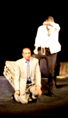
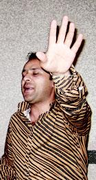
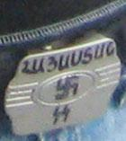

THE BELT BUCKLE OF AN ARMENIAN PATRIOT
Vanadzor became the second city for the festival of documentary films “I am Human”. During the earthquake in 1988 the city was badly damaged, however now the damage is virtually invisible. Meantime there are families in the city who currently live in trailers because to this day they haven’t received apartments.
It’s as if the city was drafted into squares. Strait streets, round plazas – it’s visible that the city was built according to a general plan, which makes it a spacious city. Because Vanadzor was being built mainly during the soviet times there aren’t any statues from the olden times. However there is a lot of classic soviet architecture. Also it differs from other Armenian cities with the small amount of buildings made of red and pink stone.
Vanadzor is considered to be a resort, but I didn’t notice it in its infrastructure. I don’t know what part of the population is busy with the resort business, but evidently there is a serious problem with joblessness in the city. Statistically the population of Vanadzor is made up of 140 thousand people. Simultaneously the local journalists insist that the population does not exceed 90 thousand. The rest have left to out side to find jobs. Mainly to Russia …
It’s as if the city was drafted into squares. Strait streets, round plazas – it’s visible that the city was built according to a general plan, which makes it a spacious city. Because Vanadzor was being built mainly during the soviet times there aren’t any statues from the olden times. However there is a lot of classic soviet architecture. Also it differs from other Armenian cities with the small amount of buildings made of red and pink stone.
Vanadzor is considered to be a resort, but I didn’t notice it in its infrastructure. I don’t know what part of the population is busy with the resort business, but evidently there is a serious problem with joblessness in the city. Statistically the population of Vanadzor is made up of 140 thousand people. Simultaneously the local journalists insist that the population does not exceed 90 thousand. The rest have left to out side to find jobs. Mainly to Russia …
THE KNIGHT OF THE CAPE AND THE DAGGER

This is not interrogation. It is a play on the stage
of local theater.
One of the days I met with a man who was about 35 years old. He introduced himself as Arthur. We discussed politics, Georgia, Russia, about the war in august. Arthur kept cursing Russia, while defending Georgia, and persisted that he was a supporter of the Armenian opposition.
During the intervals between the films people kept taking me aside and whispering into my ear to be careful with that Arthur because he works for the local intelligence agencies. After that as a minimum three other people warned me about it.
At the end of the same day Arthur approached me once again and we continued to converse. I caught a moment and asked him where does he work. At first he got confused “Well how shall one put it …Yes I work… Here and there… You know?” “Yes, Of course I know,» I answered. Arthur exhaled with relief.
Anyway I still don’t know what exactly did Arthur from the intelligence agency want. Having found out what my status is in the festival he became interested with the Georgia’s intentions. He asked about the Georgian opposition and what the population felt towards Russia. Afterwards he actively invited me to drink some Armenian Cognac, which I declined. He asked me for my cell phone number and promised me that we’ll meet again. And on that note my communication with the Caped Knight of the Dagger from Vanadzor ended.
By the way, I later heard a joke about a spy named Onik. So a double agent comes to Vanadzor to find Onik, about which he was instructed at the headquarters, where it was said that he lives next to a church, and everyone knows that place anyone you ask will tell you how to find it. The double agent asks the first passer by where to find this particular church to which the reply is “ It’s right next door to the house where the spy named Onik lives”.
And that’s how it worked out with our Caped Knight of the Dagger. Of course on the last discussion he came with a friend and they beautifully played good cop bad cop. One of them constantly kept disagreeing with the audience and their views. The second one spoke of peacemaking ideas and called to a unified world fraternity.
Weather it was voluntary or not but the audience got in to the game. This discussion was particularly active and entertaining.
During the intervals between the films people kept taking me aside and whispering into my ear to be careful with that Arthur because he works for the local intelligence agencies. After that as a minimum three other people warned me about it.
At the end of the same day Arthur approached me once again and we continued to converse. I caught a moment and asked him where does he work. At first he got confused “Well how shall one put it …Yes I work… Here and there… You know?” “Yes, Of course I know,» I answered. Arthur exhaled with relief.
Anyway I still don’t know what exactly did Arthur from the intelligence agency want. Having found out what my status is in the festival he became interested with the Georgia’s intentions. He asked about the Georgian opposition and what the population felt towards Russia. Afterwards he actively invited me to drink some Armenian Cognac, which I declined. He asked me for my cell phone number and promised me that we’ll meet again. And on that note my communication with the Caped Knight of the Dagger from Vanadzor ended.
By the way, I later heard a joke about a spy named Onik. So a double agent comes to Vanadzor to find Onik, about which he was instructed at the headquarters, where it was said that he lives next to a church, and everyone knows that place anyone you ask will tell you how to find it. The double agent asks the first passer by where to find this particular church to which the reply is “ It’s right next door to the house where the spy named Onik lives”.
And that’s how it worked out with our Caped Knight of the Dagger. Of course on the last discussion he came with a friend and they beautifully played good cop bad cop. One of them constantly kept disagreeing with the audience and their views. The second one spoke of peacemaking ideas and called to a unified world fraternity.
Weather it was voluntary or not but the audience got in to the game. This discussion was particularly active and entertaining.
THE FESTIVAL

This is Hamlet.
Host of the festival.

Host of the festival.
This is just a buckle
of simply Armenian patriot
of simply Armenian patriot
The festival went on in Charles Aznavour House of Culture on the edge of town. Aznavour himself financed the restoration of that building after the damages caused by the earthquake. There are rumors that pretty soon there will be a statue of the French singer in front of the building.
The majority who came to view the films was student population. The local television also became interested in the festival and recorded interviews with almost all of us.
Besides that, the local T.V. station organized a talk show with the Georgian participants and the president of the South Caucasus Center for Peacemaking Initiatives, Georgi Vanyan. Seeing how the show was done in Armenian, Marina Meshvildishvili and me received a synchronized interpretation of what was going on. The interpreter was a local actor with a name that suits an actor, Hamlet, last name Gyulzadyan.
It should also be mentioned that Hamlet is currently the leading actor of the Vanadzor State Dramatical Theatre of Abelyan, and in 2007 was the recipient of the main award in a yearly prize winning competition “Artist – 2007”.
One of the participants from the Armenian side was the representative of the Armenian Communist Party. During his speech Marina and I heard “ I hate Communists!” in our headphones. We looked at each other in a surprise.
“This is my personal opinion! And I refuse to interpret this idiot, he’s only going to talk nonsense anyway.” explained Hamlet.
The local mayor also planned to visit the festival. But due to an official visit by a Government Delegation under Serge Sarkissian the president of Armenia, the mayor’s visit was postponed. And so we never got a chance to meet him, and he missed out on meeting with the cinema verite.
However we met with Gayane, a young lady who did not miss a chance to view any of the films, and actively participated in the discussions. During the intermission we went outside for a smoke break and talked. Razmik, a journalist pointed my attention to Gayane’s shiny belt buckle. When I looked closer I saw a swastika and the letters –SS and some writing in Armenian that were drawn by a marker. I asked Razmik the meaning of the writing to which he replied “Armenia”.
I was untactful and pointed to the buckle and asked Gayane “Is there a NAZI Party in Armenia?” The answer was “No, of course not” Yet I would not leave her alone “Then why the swastika? Do you wear it as a sign of belonging to an Aryan nation?” “I am simply an Armenian patriot,” she answered with a sort of a challenge. “As for the belt buckle , it’s just a buckle.”
Hamlet also hosted the festival. He was a bit theatrical in his moderations, which gave the discussions after the films a sense of a play. Just as in Noyemberyan the audience took an active pert in the participation of discussions as well as watched the films with a great interest.
The discussion about the Arab - Israeli school brought a very rough reaction from the audience. Their opinions divided, some were against joint education, and some were saying the contrary, that this is the way to peace.
Here are some quotes:
A female student, 22 years of age: “Such education should start from kindergarten age not from school. It would be easier for the children to bring their outlook into the concept of this school, in that case. Of course I am not against this type of a school, I would like to have friends of different nationalities.”
A man, 40 years of age: “At the end of the film a Jewish boy and an Arabian boy are talking about how they’re going to kill each other. So it works out that at that moment they love and respect each other, but in the future they’re destined to kill each other…”
A young lady, 25 years of age: “Turks have become a sort of a Bin-Laden to us. We don’t stop to think what kind of harm has this or that particular individual as done to us, we just take them as pure evil.”
Gradually the discussion transferred to Turkish – Armenian and Azerbaijani – Armenian relations. And of course there were opinions expressed that were soaked with hatred, which I don’t choose to quote. I will end this report with two quotes and let everyone decode them their own way.
A man, 35 years of age: “Azerbaijanians haven’t done as much harm to us as the Turks did 100 years ago. Modern Turks also haven’t harmed us in any way, but the wounds made by Azerbaijanies are fresh. A lot of blood was spilt in our wars with Persia as well, but the political government announced Iran to be a good neighbor. I think that relations between people are also a result of politics. Possibly it’s a question of time… Nothing should be done. There is no need to force or try to accelerate events. We must be in peace with the thought that pain goes away with time.”
Georgi Vanyan, President of SCCPI: “… When Azerbaijanians began to massively depart from our country, our country went into poverty. Please remember what Grant Matevosian said about that. Think on how much all of us became impoverished…”
Irakli Chikhladze
September 2008
Vanadzor, Armenia
Published: 26-12-08
This article is made during the South Caucasus Film Festival of Peace and Human Rights in Armenia implemented by Caucasus Center of Peace-Making Initiative by support of the Eurasia
Partnership Foundation
and the American People through
the United States Agency
for International Development (USAID)
The majority who came to view the films was student population. The local television also became interested in the festival and recorded interviews with almost all of us.
Besides that, the local T.V. station organized a talk show with the Georgian participants and the president of the South Caucasus Center for Peacemaking Initiatives, Georgi Vanyan. Seeing how the show was done in Armenian, Marina Meshvildishvili and me received a synchronized interpretation of what was going on. The interpreter was a local actor with a name that suits an actor, Hamlet, last name Gyulzadyan.
It should also be mentioned that Hamlet is currently the leading actor of the Vanadzor State Dramatical Theatre of Abelyan, and in 2007 was the recipient of the main award in a yearly prize winning competition “Artist – 2007”.
One of the participants from the Armenian side was the representative of the Armenian Communist Party. During his speech Marina and I heard “ I hate Communists!” in our headphones. We looked at each other in a surprise.
“This is my personal opinion! And I refuse to interpret this idiot, he’s only going to talk nonsense anyway.” explained Hamlet.
The local mayor also planned to visit the festival. But due to an official visit by a Government Delegation under Serge Sarkissian the president of Armenia, the mayor’s visit was postponed. And so we never got a chance to meet him, and he missed out on meeting with the cinema verite.
However we met with Gayane, a young lady who did not miss a chance to view any of the films, and actively participated in the discussions. During the intermission we went outside for a smoke break and talked. Razmik, a journalist pointed my attention to Gayane’s shiny belt buckle. When I looked closer I saw a swastika and the letters –SS and some writing in Armenian that were drawn by a marker. I asked Razmik the meaning of the writing to which he replied “Armenia”.
I was untactful and pointed to the buckle and asked Gayane “Is there a NAZI Party in Armenia?” The answer was “No, of course not” Yet I would not leave her alone “Then why the swastika? Do you wear it as a sign of belonging to an Aryan nation?” “I am simply an Armenian patriot,” she answered with a sort of a challenge. “As for the belt buckle , it’s just a buckle.”
Hamlet also hosted the festival. He was a bit theatrical in his moderations, which gave the discussions after the films a sense of a play. Just as in Noyemberyan the audience took an active pert in the participation of discussions as well as watched the films with a great interest.
The discussion about the Arab - Israeli school brought a very rough reaction from the audience. Their opinions divided, some were against joint education, and some were saying the contrary, that this is the way to peace.
Here are some quotes:
A female student, 22 years of age: “Such education should start from kindergarten age not from school. It would be easier for the children to bring their outlook into the concept of this school, in that case. Of course I am not against this type of a school, I would like to have friends of different nationalities.”
A man, 40 years of age: “At the end of the film a Jewish boy and an Arabian boy are talking about how they’re going to kill each other. So it works out that at that moment they love and respect each other, but in the future they’re destined to kill each other…”
A young lady, 25 years of age: “Turks have become a sort of a Bin-Laden to us. We don’t stop to think what kind of harm has this or that particular individual as done to us, we just take them as pure evil.”
Gradually the discussion transferred to Turkish – Armenian and Azerbaijani – Armenian relations. And of course there were opinions expressed that were soaked with hatred, which I don’t choose to quote. I will end this report with two quotes and let everyone decode them their own way.
A man, 35 years of age: “Azerbaijanians haven’t done as much harm to us as the Turks did 100 years ago. Modern Turks also haven’t harmed us in any way, but the wounds made by Azerbaijanies are fresh. A lot of blood was spilt in our wars with Persia as well, but the political government announced Iran to be a good neighbor. I think that relations between people are also a result of politics. Possibly it’s a question of time… Nothing should be done. There is no need to force or try to accelerate events. We must be in peace with the thought that pain goes away with time.”
Georgi Vanyan, President of SCCPI: “… When Azerbaijanians began to massively depart from our country, our country went into poverty. Please remember what Grant Matevosian said about that. Think on how much all of us became impoverished…”
Irakli Chikhladze
September 2008
Vanadzor, Armenia
Published: 26-12-08